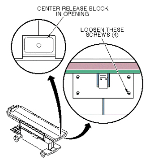
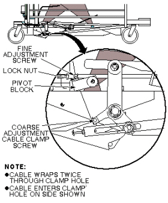

Operating Documentation
Direction 5440000, Rev# 5
Signa HDxt Service Methods
Module Version 4.0, Version Date 9/29/08
Operating Documentation |
| Required Persons | Preliminary Reqs | Procedure | Finalization |
|---|---|---|---|
| 1 | Not Applicable | Not Applicable | Not Applicable |
This procedure is applicable to the following table products:
Signa Lightweight Patient Transport Table
Signa Oncology Patient Transport Table Option
Signa OR-Compatible Patient Transport Table Option
Loosen four (4) hex socket head screws securing the release block assembly. See Illustration 1.
Illustration 1: CRADLE RELEASE BLOCK POSITION ADJUSTMENT

Adjust the position of the assembly so the release block is centered in the cutout on the front of the cradle assembly. Tighten hex socket screws. See Illustration 1.
Dock Patient Transport.
Remove all upper and lower trim covers from sides of Patient Transport.
Loosen the lock nut, then tighten or loosen the cable adjustment screw in the pivot block so that the cradle release block is flush or just below the level of the table top. See Illustration 2.
Illustration 2: CRADLE RELEASE BLOCK RETRACTION ADJUSTMENT

Tighten lock nut.
| NOTE: | If the adjustment screw does not provide enough range for adjustment, coarse adjustment may be made to the cable length where the cable end is clamped into actuator bracket. Fine adjustment will be required after performing a coarse adjustment. |
No finalization steps.